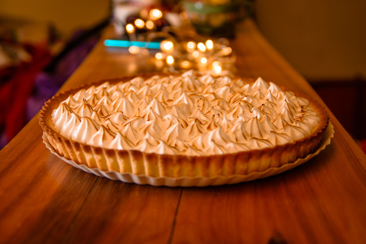

Repostería
Para endulzarte la vida
Selva negra
11 de Mayo 2019
150 Gr. de Azúcar
180 Gr. de Harina
6 Huevos
2 Cucharada de Cacao en polvo
1 Litro de Crema para batir
Virutas de Chocolate
30 Ml. de Gran Menier ó Brandy
1/2 Kilo de Fresas ó Cerezas
Preparación del bizcocho
En un bol colocar la harina y el cacao en polvo y mezclarlos bien.
Aparte en un bol libre de grasa batir los huevos enteros con el azúcar.
Cuando la mezcla se torne espumosa, blancuzca y de aspecto gelatinoso, se deja de batir y con paleta de madera se le incorpora la harina con en cacao, con movimientos envolventes, teniendo cuidado de no sacarle mucho el aire para que el bizcocho no se ponga pesado. Colocar la preparación en un molde engrasado y enharinado y hornear a 350ºF (180ºC) por 30 minutos
Preparación de la Torta
Tome el bizcocho de chocolate y hacerle dos cortes horizontales para obtener tres capas.
Disponer la primera capa de bizcocho en la bandeja donde se armará la torta y mojarla ligeramente con licor.
Colocar una capa de crema batida y las fresas picadas en mitades, colocar otra capa de crema batida sobre las fresas para que pegue la siguiente capa de bizcocho.
Una vez colocada la capa de bizcocho, volvemos a mojar con licor y repetimos el proceso anterior.
Decorar toda la torta con crema chantilly y cubrir los costados con la viruta de chocolate. Refrigerar. Y Listo!!
 Brian0420: Deliciosa Selva Negra, me encanto hacerla.
Brian0420: Deliciosa Selva Negra, me encanto hacerla.
 Vanessa: Muy rica, exquisito sabor.
Alexander: Fascinado con tu preparación.
Vanessa: Muy rica, exquisito sabor.
Alexander: Fascinado con tu preparación.
Lemon Pie
03 de Junio 2019 250 grs de harina 4 cdas de azúcar 120 grs de manteca ralladura de 1 limón 1 huevo
1 huevo 1 taza de azúcar 4 cdas de fécula de maíz 500 cc de agua jugo de 2 limones ralladura de 1 limón
4 claras 1/2 taza de azúcar
Hacer la masa uniendo los ingredientes y dejar reposar media hora envuelta en papel film.
Estirarla, forrar una tartera redonda desmontable de 26 cm, pincharla con un tenedor y cocinar a blanco en horno precalentado moderado por 20 minutos; retirar y reservar.
Por otra parte, colocar en una olla los ingredientes del relleno, revolver con batidor y cocinar a fuego bajo revolviendo siempre hasta que rompa el hervor y espese.
Retirar, dejar que entibie y rellenar la tarta.
Reservar en heladera.
Hacer el merengue poniendo los ingredientes en un bol a baño María y cuando el azúcar se haya disuelto, retirar y poner a batir hasta conseguir un batido brilloso y firme.
Volcar el merengue sobre la crema, decorar como se desee y dorar apenas en la parrilla del horno o con soplete.
Alansito: Lo pondré en practica.